IAM CASE STUDY
1. Project Overview
Identity Governance & Access Control Transformation
This case study documents the implementation of an Identity and Access Management model for SweetCrust Bakery Ltd, a growing business using Microsoft Entra ID, Microsoft 365, Microsoft Intune, and Microsoft Entra ID Governance.
The project builds on the earlier Hybrid Identity Transformation case study, where existing users were synchronized from on-premises Active Directory into Microsoft Entra ID. After identity modernization, the business required stronger governance controls to manage user access, role changes, privileged administration, application access, and audit reporting.
The goal of this project was to implement a practical IAM operating model based on least privilege, role-based access control, Joiner-Mover-Leaver lifecycle management, access reviews, privileged access governance, and repeatable audit reporting.
Project Summary
2. Technologies Used
- Microsoft Entra ID
- Microsoft Entra ID Governance
- Microsoft Privileged Identity Management (PIM)
- Microsoft 365 E3
- Microsoft SharePoint Online
- Microsoft My Apps Portal
- Enterprise Applications
- Security Groups
- Role-Based Access Control (RBAC)
- Microsoft Graph PowerShell
- Windows 10
- Windows 11
3. The Business Problem
As SweetCrust Bakery Ltd adopted Microsoft 365 and cloud-based identity management, access control became more difficult to manage manually. Users required access based on job roles, departments, and business responsibilities, while administrators needed a secure method to perform privileged tasks without holding permanent elevated access.
The business faced several identity governance risks:
- Users could accumulate unnecessary access after changing departments.
- New employees required consistent onboarding, group membership, and license validation.
- Departing employees needed immediate access revocation.
- Standard users needed productivity access but should be blocked from administrative portals.
- Helpdesk and IAM staff needed delegated permissions without Global Administrator access.
- Privileged access needed to be temporary, auditable, and Just-In-Time.
- Finance application access needed to be restricted to authorized users only.
- IAM administrators needed audit reports for users, licensing, and group memberships.
4. Solution Architecture & Design
The solution was designed around Microsoft Entra ID as the central identity platform. Security groups were used to define role-based access boundaries, Microsoft Entra ID Governance was used for access reviews, and PIM was used to control privileged administrative access.
This design ensures that access decisions are based on business role, group membership, governance review, and time-bound privileged access rather than permanent or individually assigned permissions.
5. Implementation Phases
The IAM transformation was implemented through a series of structured phases that aligned identity administration, governance, privileged access management, and access control with business requirements.
Phase 1 – Enterprise RBAC Foundation & Security Group Design
The project began with the design of a scalable Role-Based Access Control (RBAC) model for SweetCrust Bakery Ltd. Department-based security groups were created to support access delegation, governance, onboarding, offboarding, and future privileged access controls.
- SG-IAM-Team
- SG-Helpdesk
- SG-HR
- SG-Finance
- SG-All-Employees
- SG-PIM-Eligible-Admins
Outcome: Established the identity foundation required for RBAC, governance, and delegated administration.
Phase 2 – Joiner Process & Licensing Validation
A new IAM employee, Michael Brown, was onboarded into Microsoft Entra ID and assigned to the appropriate security groups. Access validation identified a Microsoft 365 licensing issue that prevented SharePoint access.
Investigation confirmed that group membership had been assigned correctly, but the user had not received a Microsoft 365 E3 license.
After license assignment, SharePoint access was successfully restored.
Outcome: Demonstrated structured onboarding, troubleshooting methodology, and licensing governance.
Phase 3 – Mover Process (Department Transfer)
Michael Brown was transferred from the IAM team to the Helpdesk department. Existing access was reviewed and updated to align with new responsibilities.
- Removed from SG-IAM-Team
- Added to SG-Helpdesk
- Retained SG-All-Employees membership
This prevented privilege accumulation while ensuring the employee retained the access required for their new role.
Outcome: Demonstrated controlled access reassignment and privilege creep prevention.
Phase 4 – Leaver Process & Access Revocation
The offboarding process validated that access could be removed immediately when an employee leaves the organization.
A former employee account was disabled, active sessions were revoked, and access validation was performed from a managed Windows endpoint.
Microsoft successfully blocked authentication attempts, confirming that organizational access had been removed.
Outcome: Demonstrated secure offboarding and identity lifecycle enforcement.
Phase 5 – RBAC & Delegated Administration
Delegated administration was implemented using Microsoft Entra ID administrative roles. Instead of assigning Global Administrator access, operational tasks were delegated using the User Administrator role.
Validation confirmed that delegated administrators could manage users and groups while remaining restricted from higher-risk administrative functions.
Outcome: Demonstrated least privilege and secure delegation of administrative responsibilities.
Phase 6 – Privileged Access Governance (PIM)
Microsoft Entra Privileged Identity Management (PIM) was implemented to eliminate standing administrative privileges and enforce Just-In-Time (JIT) access.
Michael Brown was assigned an Eligible User Administrator role and activated privileged access only when administrative tasks were required.
Validation confirmed:
- Eligible assignment creation
- JIT role activation
- Password reset administration
- Time-bound activation controls validated through Microsoft Entra PIM
Following expiration, the role automatically returned to an eligible state and privileged access was removed.
Outcome: Demonstrated modern privileged access governance and Zero Trust principles.
Phase 7 – Identity Governance & Access Reviews
Microsoft Entra Access Reviews were implemented to validate membership of the SG-Finance security group and identify potentially unnecessary access.
The review process generated automated recommendations based on user activity and demonstrated governance-driven access certification.
Outcome: Demonstrated ongoing access validation, governance automation, and least privilege enforcement.
Phase 8 – Enterprise Application Access Control
A Finance application was integrated into Microsoft Entra ID and secured using group-based authorization through SG-Finance.
Authorized users inherited access through group membership while unauthorized users were prevented from viewing or accessing the application.
Validation confirmed successful application visibility for approved users and access denial for unauthorized users.
Outcome: Demonstrated enterprise application access control through group-based authorization and centralized identity management.
Phase 9 – IAM Audit & Reporting
Microsoft Graph PowerShell automation was used to generate audit reports covering users, licensing, and security group memberships.
Automated reporting improved visibility into identity inventory, RBAC assignments, and governance controls while reducing manual administrative effort.
Outcome: Demonstrated operational IAM reporting and governance automation.
6. Technical Evidence
The following screenshots provide implementation evidence for each stage of the Identity Governance & Access Control Transformation project.
RBAC Foundation
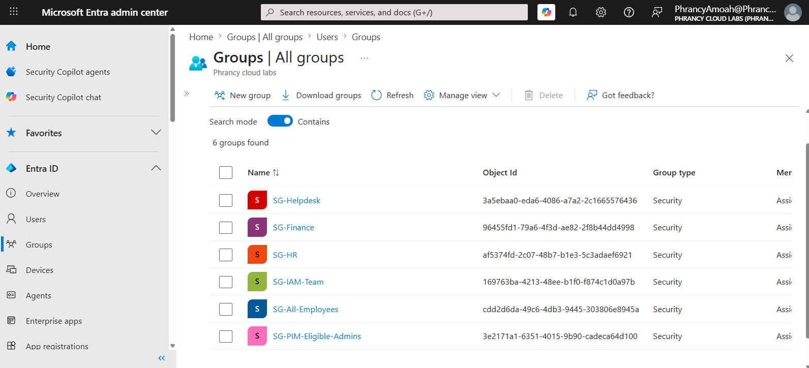
Security groups established to support RBAC, governance, onboarding, offboarding, delegated administration, and privileged access management.
Joiner Access Failure
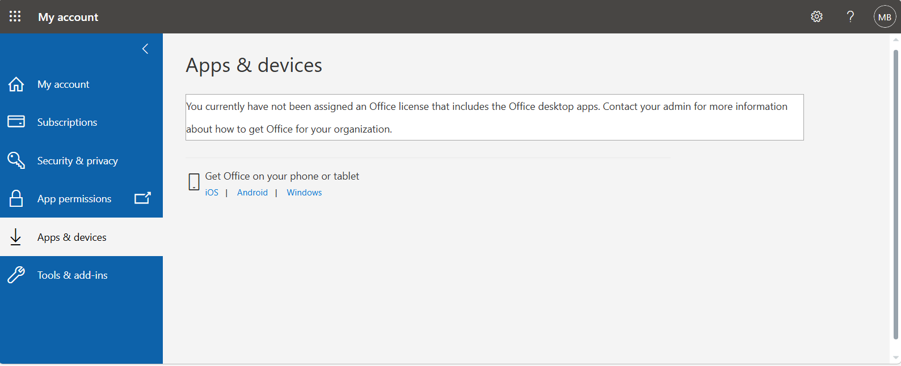
SharePoint access denied because Microsoft 365 licensing had not yet been assigned.
Joiner Process
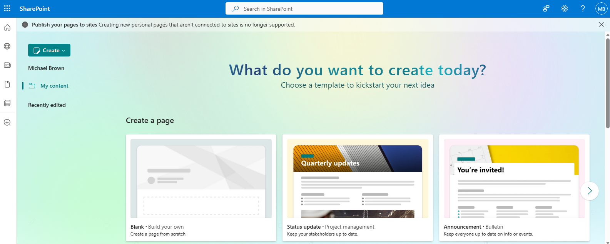
SharePoint access successfully restored following Microsoft 365 E3 license assignment.
Mover Process
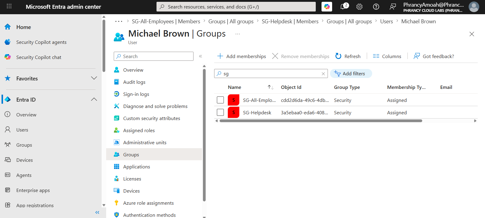
Department transfer completed through controlled security group reassignment.
Leaver Process
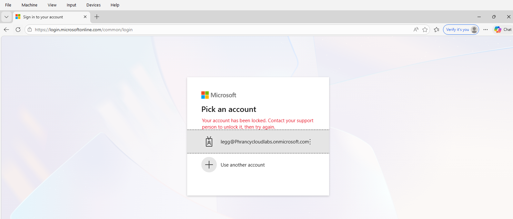
User access successfully revoked following account disablement and sign-in restriction.
Delegated Administration
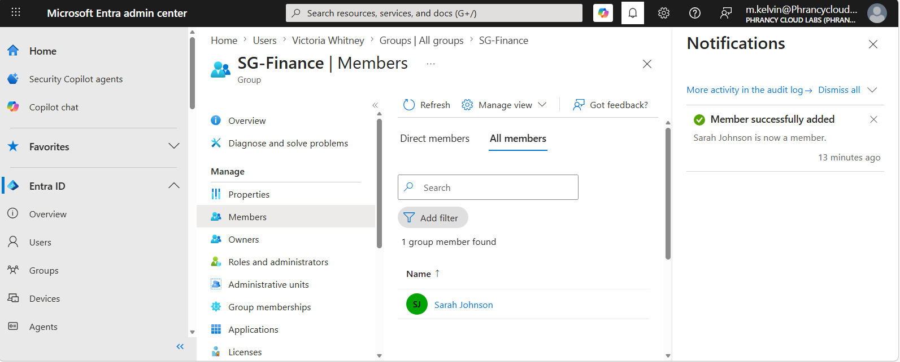
Administrative functions delegated using RBAC rather than Global Administrator privileges.
Access Reviews
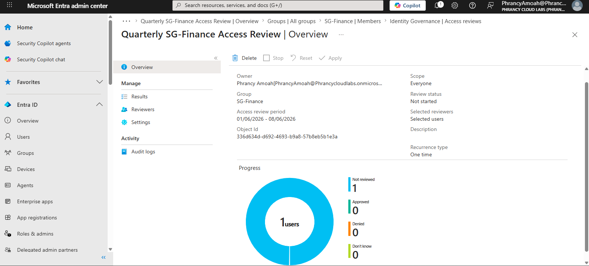
Microsoft Entra Access Review configured for governance-driven membership validation.
Access Review Recommendation
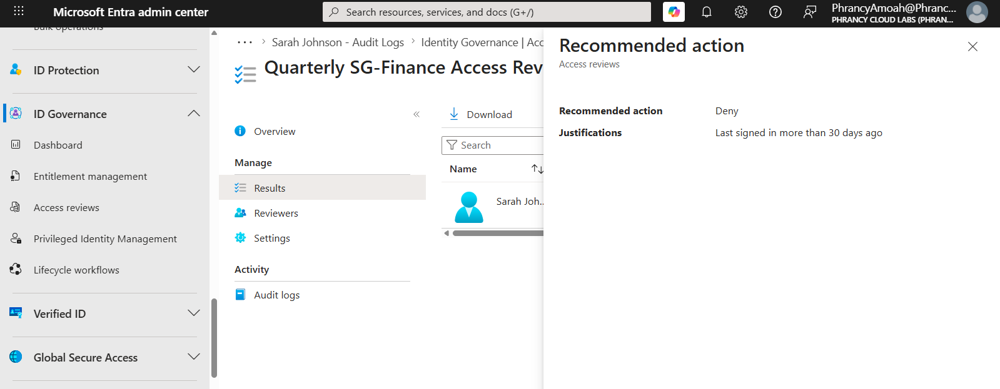
Automated governance recommendation generated for inactive access review decisions.
Application Group Assignment
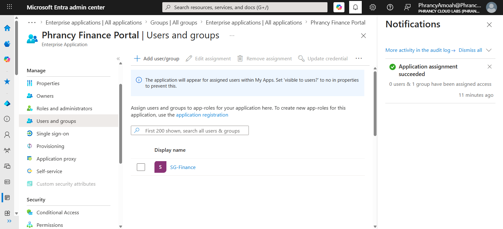
SG-Finance assigned to the Finance Portal application to enforce group-based authorization.
Enterprise Application Access
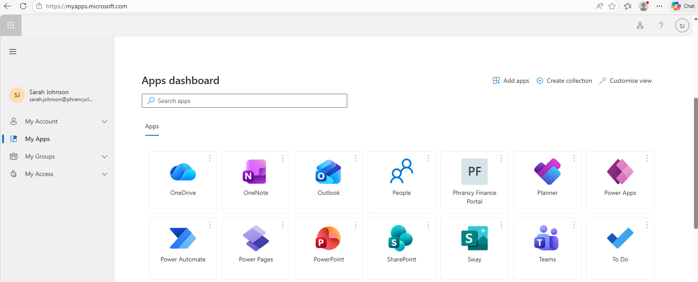
Authorized Finance user successfully received application visibility through SG-Finance membership.
Unauthorized Access Validation
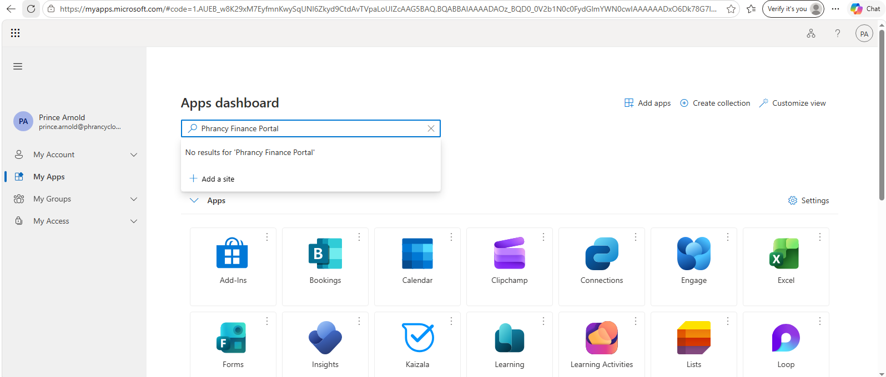
Unauthorized user denied access due to lack of SG-Finance membership.
PIM Eligible Assignment
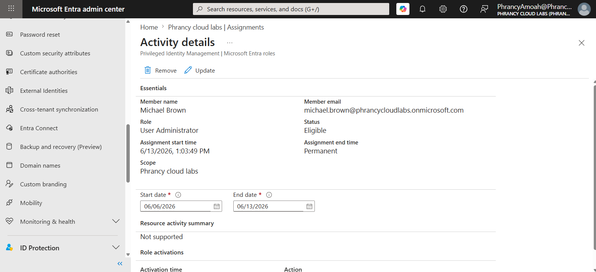
Michael Brown assigned an Eligible User Administrator role through Microsoft Entra PIM.
PIM Activation Request
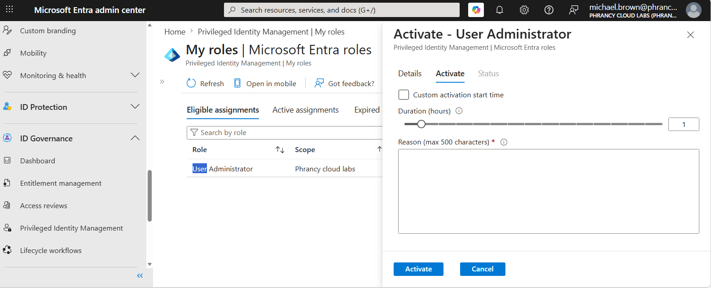
Michael Brown requested temporary User Administrator privileges through Microsoft Entra Privileged Identity Management before elevation was approved and activated.
PIM Role Activation
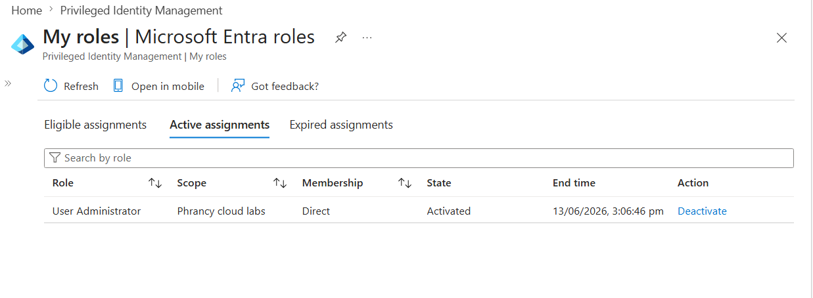
Just-In-Time privileged access successfully activated with automatic expiration controls.
PIM Administrative Validation
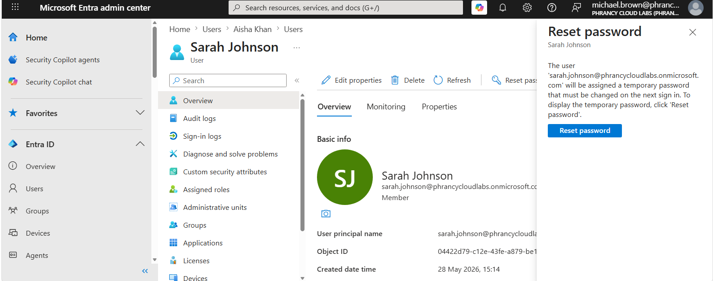
Temporary administrative access validated through password reset functionality.
PIM Audit Trail
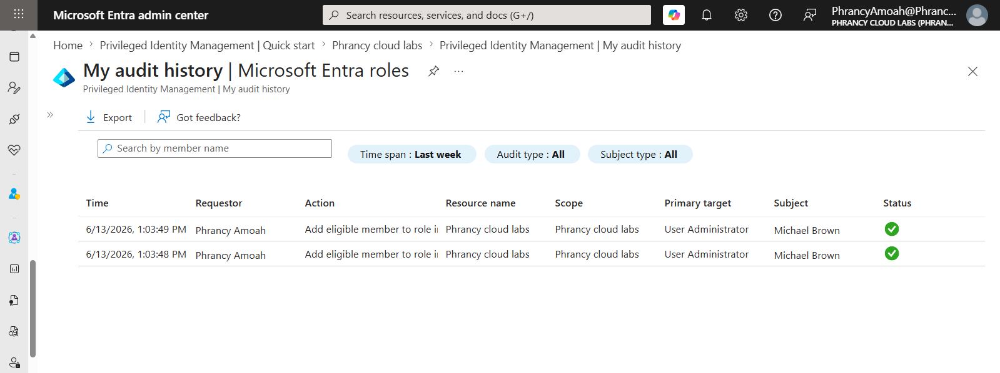
Microsoft Entra PIM audit history recorded the eligible User Administrator role assignment for Michael Brown, providing governance and compliance evidence for privileged access management activities.
User Audit Reporting
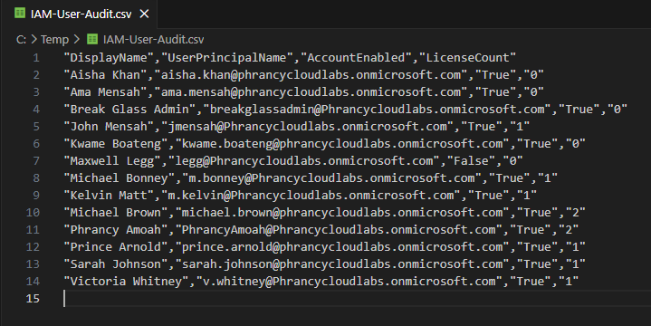
Microsoft Graph PowerShell user inventory and identity governance reporting.
Group Membership Reporting
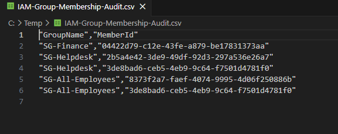
Automated RBAC and group membership reporting for governance visibility.
7. Validation & Testing
A series of validation exercises were performed throughout the project to ensure identity governance controls functioned as designed. Testing focused on access provisioning, role assignment, privilege elevation, access reviews, application authorization, and automated governance controls.
Joiner Validation
- New employee account successfully onboarded.
- Security group membership assigned.
- Microsoft 365 E3 license applied.
- SharePoint access restored after licensing correction.
Result: PASS
Mover Validation
- User transferred between departments.
- Previous access removed.
- New department permissions applied.
- Privilege accumulation prevented.
Result: PASS
Leaver Validation
- Account disabled.
- Authentication blocked.
- Access revocation confirmed from managed endpoint.
- Organizational resources inaccessible.
Result: PASS
RBAC Validation
- User Administrator role assigned.
- User management tasks available.
- Higher privilege functions remained restricted.
Result: PASS
PIM Validation
- Eligible assignment created.
- Just-In-Time activation completed.
- Password reset functionality validated.
- Time-bound activation controls validated through Microsoft Entra PIM.
- Privileged administrative tasks successfully completed during activation window.
- PIM audit logs successfully recorded privileged role assignment activity.
Result: PASS
Access Review Validation
- Access Review created successfully.
- Review recommendations generated.
- Governance controls validated.
Result: PASS
Enterprise Application Access Validation
- Authorized user successfully accessed Finance application.
- Unauthorized user could not view the application.
- Group-based authorization verified.
Result: PASS
8. Troubleshooting
Issue 1 – SharePoint Access Failure
Problem:
User account was correctly provisioned and assigned security group membership but could not access SharePoint Online resources.
Root Cause:
Microsoft 365 E3 license had not been assigned.
Resolution:
Assigned Microsoft 365 E3 license and validated access restoration.
Issue 2 – PIM Access Validation
Problem:
User Administrator role appeared unavailable after initial testing.
Root Cause:
Just-In-Time activation window had expired and the role automatically returned to an Eligible state.
Resolution:
Re-activated the role through Microsoft Entra PIM and validated privileged administrative functionality.
Issue 3 – Access Governance Decisions
Problem:
Determining whether long-standing group memberships were still required.
Resolution:
Access Reviews were implemented to support periodic access certification and governance-driven decisions.
9. Engineering Takeaways
- IAM is not only user creation; it includes lifecycle management, governance, access validation, privileged access, and reporting.
- RBAC should be designed before permissions are assigned so access can scale through groups instead of individual user assignments.
- Joiner, Mover, and Leaver processes reduce security risk by ensuring access is granted, changed, and removed based on business role.
- Licensing is a critical part of onboarding because a user account alone does not guarantee access to Microsoft 365 services.
- Microsoft Entra PIM reduces standing privilege by allowing administrators to activate roles only when needed.
- Access Reviews help detect stale access and support ongoing least-privilege governance.
- Enterprise application access should be controlled using security groups to simplify authorization and improve auditability.
- Microsoft Graph PowerShell reporting improves IAM visibility by auditing users, licenses, and group memberships.
- A complete IAM model combines RBAC, JML, PIM, Access Reviews, application access control, and audit reporting.